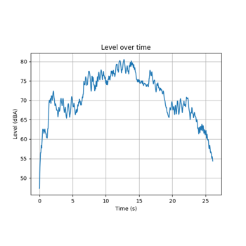

Examples#
These examples show how to use PyAnsys Sound for various workflows.
Initialize PyAnsys Sound and check out the license
Initialize PyAnsys Sound and check out the license
Load a signal from a WAV file
Spectrogram: compute the STFT and ISTFT
Spectrogram: compute the STFT and ISTFT
Isolate orders
Use the Xtract feature
Calculate TNR and PR
Calculate psychoacoustic indicators
Calculate psychoacoustic indicators

Calculate RMS, dBSPL and dBA levels
Calculate RMS, dBSPL and dBA levels
Calculate tonality indicators

Create and work with a Sound Composer project
Create and work with a Sound Composer project